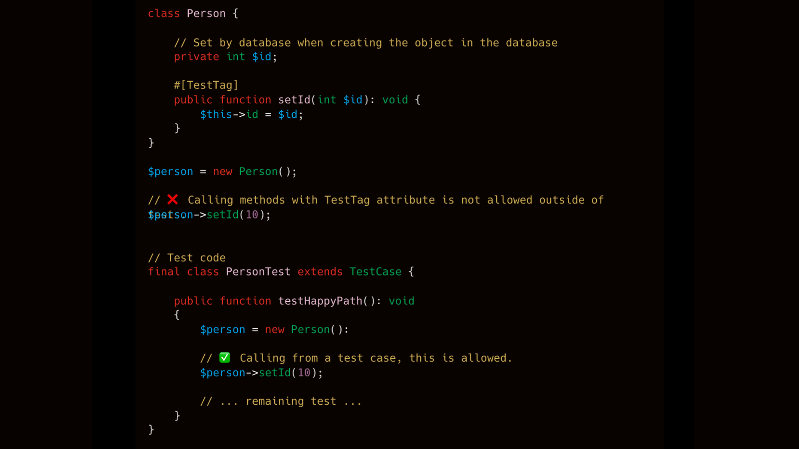

November 28th 2025 software design static analysis open source php language extensions

Years ago I studied electronic engineering at the University of Bristol. Most electronic systems are composed of one or more chips (also known as Integrated Circuits - ICs). The ICs had connectors (pins or tags) to take inputs and give outputs. Some of these ICs were very complex and testing them was difficult. They were both metaphorically and literally black boxes. To aid testing some ICs would have pins or tags that were only used for testing. These could act either as inputs; to put the chip into a certain state. Or outputs, to get an, otherwise, internal value.
It was these test pins or tags that were the inspiration for the #[TestTag] attribute.
The #[TestTag] is added to methods to signify these methods should only be used for testing purposes.
In one legacy project I work on our models use IDs that are set by the database.
We have unit tests for some of these models. The unit tests require the ID field to be set. No real database is available for the unit tests.
To get round this problem we added a setId method to the models. These methods should only ever be called by test code and never application code.
The TestTag enforces this requirement.
E.g. the Person::setId method can only be called from test code.
class Person {
// Set by database when creating the object in the database
private int $id;
#[TestTag]
public function setId(int $id): void {
$this->id = $id;
}
}
$person = new Person();
// ❌ Calling methods with TestTag attribute is not allowed outside of tests.
$person->setId(10);
This would be allowed:
final class PersonTest extends TestCase {
public function testHappyPath(): void
{
$person = new Person():
// ✅ Calling from a test case, this is allowed.
$person->setId(10);
// ... remaining test ...
}
}
If you are using the PHPStan PHP Language Extension plugin you can define what is test code in the following ways:
Test are test codeAdding the following to your phpstan.neon file will mean that all classes that end with Test will be deemed test code.
parameters:
phpLanguageExtensions:
mode: className
Adding the following to your phpstan.neon file allows you to specify the base namespace that all test code lives in.
In the example below any code in a namespace starting App\Test is deemed test code.
parameters:
phpLanguageExtensions:
mode: namespace
testNamespace: 'App\Test'
See the PHPStan extension's README for full details.
It is possible in PHP to access private member data, and there are libraries that support this.
In the example above we could not provide the setId. Instead, we'd use a library, or write PHP code, to bypass PHP's visibility checks and set Person::id directly.
Rather than clever hacks that access private member data, I'd rather access is done via methods with the TestTag attribute for the following reasons:
setId method is used for testing only.setId method, our IDE, or static analysis tools, will show that the method is no longer used and safe to delete.setId method.The TestTag can simplify or enable testing by exposing internal state within an object.
The use of TestTag probably indicates a code smell. Every time you use it you should ask yourself, is there a better way of doing this.
That said, for gradually improving legacy code, TestTag could prove very useful.
NOTE: In this setId example, I'd argue a better solution is to use a database friendly UUID for the model's ID, with the application and not the database responsible for generation the ID.